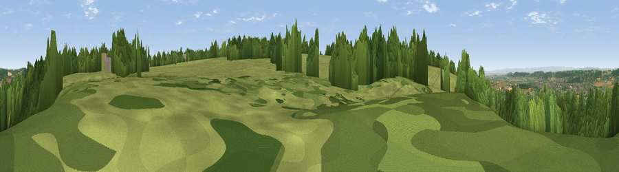

Viewpoint near Backwell
#16554 in England · top 30% of its area beats it · near Backwell · footpathWhere it is
The exact computed spot (ST 49575 67525). Click the marker for map links.
Public access: a public right of way passes within 14 m of this spot. Computed from Natural England's CRoW access layer and OpenStreetMap rights of way — not the legal definitive map. Always verify locally.
The view, rendered

A 360° render of this exact spot computed from the terrain model, tree cover and land cover — summer colours, afternoon light, calibrated against photographs of famous viewpoints. Real trees, hedges and buildings will differ in detail.
The panorama
Grey silhouette: terrain skyline in each direction (720 bearings, Earth curvature and refraction included). Dashed green: skyline with trees (+15 m) and buildings (+8 m) as obstacles. Blue strip: how far the ground is visible on each bearing.
Where the view opens
Wedge length = distance to the farthest visible ground on that bearing (vegetation-aware). Rings at 10, 25 and 50 km.
What fills the view
56% woodland · 40% grassland · 2% built-up · 1% cropland ·
Angular shares of the visible panorama (visual magnitude), not map area. Landscape diversity 0.37 (0–1 Shannon).
Key numbers
More beautiful places nearby
The staircase of upgrades: each row has a higher view potential than everything closer. Driving times are estimates from straight-line distance, calibrated against real road routing — check an actual route before setting out.
| Place | Direction | Drive | Score |
|---|---|---|---|
| Viewpoint near Flax Bourton | ENE · 1 km | ~2 min | 60.9 |
| Viewpoint near Backwell | W · 1 km | ~3 min | 65.5 |
| Cleeve Hill | SW · 5 km | ~10 min | 67.4 |
| Viewpoint near Cleeve | SW · 5 km | ~11 min | 67.8 |
| Viewpoint near Congresbury | SW · 5 km | ~12 min | 69.4 |
| Dundry Hill | E · 6 km | ~12 min | 72.4 |
| Dial Hill | WNW · 10 km | ~19 min | 74.9 |
| Beacon Batch | S · 10 km | ~20 min | 79.4 |
51.40450, -2.72631 · source: screening · position refined by local search. Computed location — check access rights before visiting.